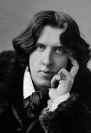

Oscar Wilde (Оскар Вайлд)
Біографічна довідка
О́скар Фі́нґал О'Фла́герті Вілс Вайлд (або Уайльд), (Oscar Fingal O'Flahertie Wills Wilde; 16 жовтня 1854, Дублін, Ірландія, Сполучене королівство — 30 листопада 1900, Париж, Франція) — видатний ірландський англомовний поет, драматург, прозаїк, есеїст.
Народився у сім'ї лікаря-офтальмолога Вільяма Уайльда і письменниці Джейн Франциско Елджі (англ. Jane Francesca Elgee). Отримав класичну освіту: естетичні погляди формувались у Триніті Коледжі (Дублін) та оксфордському коледжі святої Магдалени, — проте йшов власним шляхом, керуючись власною тезою: «Те, що дійсно треба знати, не розтлумачить ніхто».
У 1881 вийшла перша друкована збірка його поезій «Вірші». У 1888 році вийшла друкована збірка казок «Щасливий принц та інші казки» (англ. The Happy Prince and Other Stories).
У 1891 відзначився друкованою збіркою «Злочин лорда Артура Севайла та інші історії» (англ. Lord Arthur Savile's Crime and Other Stories), та оприлюдненням, як критичних праць «Наміри» (англ. Intentions (Oscar Wilde)), «Занепад брехні» (англ. The Decay Of Lying: An Observation), «Критик як митець» (англ. The Critic As Artist), «Людська душа при соціалізмі» (англ. The Soul of Man under Socialism), так і єдиного роману «Портрет Доріана Грея» — тепер найбільш уславленого його твору, який після публікації приніс доволі неслави: скандал, процес, суд і дворічне ув'язнення за моральні збочення. Знову власною тезою-підсумком пролунали гіркі слова виданої анонімно «Балади Редінзької в'язниці» (англ. The Ballad of Reading Gaol, 1898): «Коханих убивають всі».
Успіх і визнання принесли автору його п'єси «Віяло леді Віндермір» (англ. Lady Windermere's Fan, 1892), «Жінка, не варта уваги» (англ. A Woman of No Importance, 1893), «Саломея» (фр. Salomé, 1893), «Ідеальний чоловік» (1895). І все ж найкращою вважається п'єса «Як важливо бути серйозним» (англ. The Importance of Being Earnest, 1895).
Останні роки добровільного вигнання з Батьківщини провів у Франції, де оселився після звільнення з тюрми під несправжнім ім'ям, зазнавши там матеріальної скрути, а ще більш — духовної.
Жив у Парижі, де й помер від менінгіту. Похований був на цвинтарі Пер-Лашез.